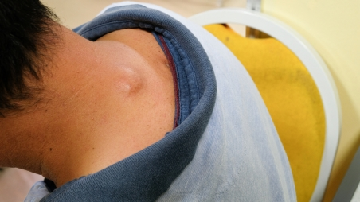

အရည်အိတ်အလုံးနှင့်အဖုများ

ခန္ဓာကိုယ်မှာ ဖြစ်ပေါ်နိုင်တဲ့ အလုံးအဖုတွေအကြောင်း စိတ်ဝင်စားပါသလား။ အရေပြားမှာ ပေါက်တတ်တဲ့ တချို့ အဖုအလုံးတွေက ထူးခြားပြီး လက္ခဏာတွေကလည်း တစ်ခုနဲ့ တစ်ခု မတူကြပါဘူး။ ဒီတော့ ဘာတွေက ဘယ်လိုရှိလဲ သိချင်နေမှာပါပဲ။
အရည်အိတ် အလုံး၊ အဖုများနှင့် သင့်အရေပြား ကျန်းမာရေး
သင့် အရေပြား မျက်နှာပြင်တွင် ဖြစ်စေ အရေပြားအောက်တွင် ဖြစ်စေ အရည်အိတ် အလုံး၊ အဖုများ မျိုးစုံ ဖြစ်ပွားနိုင်ပါသည်။ အဖြစ်များသော အလုံး၊ အဖုများမှာ
၁။ Skin Cysts (အရေပြား အရည်အိတ်များ)
၂။ Cherry Angioma (ချယ်ရီသီးကဲ့သို့သော သွေးကြောထုံးများ)
၃။ Dermatofibromas (အရေပြား ဖိုင်ဘာမျှင်လုံးများ)
၄။ Epidermoid cysts (အရေပြား အပေါ်လွှာ အလုံးများ)
၅။ Folliculitis (မွေးကျွတ်နာလုံးများ)
၆။ Keratinacanthoma
၇။ Lipomas (အဆီကျိတ်များ) ဖြစ်ပါသည်။
၁။ Skin Cysts (အရေပြား အရည်အိတ်များ)
ကင်ဆာမဟုတ်သော ထို အရည်အိတ်များသည် အရည်ကြည် သို့မဟုတ် ပြည်ကဲ့သို့သော အရည်များဖြင့် ပြည့်နေသော အရေပြားအောက်ရှိ အလုံးပိတ် အိတ်များ ဖြစ်သည်။ ထိုအရည်အိတ် များသည် အရေပြား၏ မည်သည့်နေရာတွင် မဆို ဖြစ်နိုင်သည်။ စမ်းကြည့်သောအခါ ပဲစေ့လေးများ အရေပြားအောက်တွင် စမ်းရသကဲ့သို့ ဖြစ်သည်။ ပိုးဝင်ခြင်း အဆီဂလန်းများ ပိတ်ခြင်းများကြောင့် ဖြစ်ပွားနိုင်သည်။
လက္ခဏာများ
များသောအားဖြင့် ထိုအရည်အိတ်များသည်-
ကြီးထွားမှု နှေးခြင်း
နာကျင်မှု မရှိခြင်း
ထိကြည့်သောအခါ အရေပြားအောက်တွင် အလုံးလေး ချောချောမွတ်မွတ် ခံစားရခြင်း တို့ ဖြစ်သည်။
ကုသနည်း
ထိုအရည်အိတ်များသည် ရောင်ခြင်း ပိုးဝင်ခြင်း မရှိဘဲ နာကျင်လေ့ မရှိပါ။ ထို့အပြင် ကုသမှု မခံယူဘဲ သူ့ဘာသာ ပျောက်ကင်းခြင်း မရှိပါ။ အချို့ အရည်အိတ်များသည် ရောဂါ လက္ခဏာ သက်သာရန် ဓါးဖြင့် ဖောက်ထုတ်ရသည်။ အချို့ ရောင်ရမ်းနေသော အရည်အိတ်များထဲသို့ ကော်တီဇုန်း (Cortisone) ဆေး အသုံးပြုခြင်းဖြင့် အရည်အိတ်ကို ကျုံ့စေပါသည်။ ထိုနည်းများဖြင့် မသက်သာ သောအခါ၊ ခဏခဏပြန်ဖြစ်သောအခါ ခွဲစိတ်ဖယ်ရှားခြင်းဖြင့် ကုသနိုင်သည်။
၂။ Cherry Angioma (ချယ်ရီသီးကဲ့သို့သော သွေးကြောထုံးများ)
ချောမွတ်သော အနီရောင် ချယ်ရီသီးကဲ့သို့သော အဖုလုံးအဖြစ် အရေပြားပေါ်တွင် တွေ့ရသည်။
များသောအားဖြင့် ခန္ဓာကိုယ် အလယ်ပိုင်း ခါး နေရာများတွင် ဖြစ်လေ့ရှိပြီး နေရာမရွေးလည်း ဖြစ်ပွားနိုင်ပါသည်။ ဖြစ်ပွားရခြင်း အကြောင်းရင်းကို မသိရဘဲ အသက်၄၀ ကျော်လာသောအခါ ဖြစ်ပွားမှုများလာခြင်းကို တွေ့ရသည်။
လက္ခဏာများ
ချောမွတ် သေးငယ်တောက်ပသော အနီရောင် အလုံးဖြစ်သည်။ အရွယ်အစားမှာ အပ်ခေါင်းထိပ် ပမာဏမှ တစ်လက်မ၏ လေးပုံတစ်ပုံ လုံးပတ် အရွယ်အစားထိ ရှိသည်။
ကုသနည်း
များသောအားဖြင့် ကုသရန် မလိုပါ။ ကြည့်မကောင်းသော အခါတွင်လည်းကောင်း သွေးထွက်သောအခါတွင် လည်းကောင်း လေဆာ သို့မဟုတ် မီးတို့ခြင်းဖြင့် ဖယ်ရှားခြင်း ပြုလုပ်နိုင်သည်။ ထိုသို့ပြုလုပ်သောအခါ အမာရွတ် ကျန်နိုင်သည်။
၃။ Dermatofibromas (အရေပြား ဖိုင်ဘာမျှင်လုံးများ)
အန္တရာယ် မရှိသော လုံးဝန်းသော ကြက်သွေးရောင် အလုံးအဖြစ် လက်နှင့် ခြေနေရာများတွင် တွေ့ရလေ့ရှိသည်။ ထိုအလုံးသည် အမာရွတ် တစ်ရှူးများပါပြီး စမ်းသောအခါ ခပ်မာမာ အလုံးလေး ကဲ့သို့ ဖြစ်နေသည်။
လက္ခဏာများ
အနီရောင် အညိုရောင် ခရမ်းရောင် အလုံးဖြစ်ပြီး အချိန်ကြာသောအခါ အရောင်ပြောင်းခြင်း၊
လေသေနတ်ကျည်စေ့ကဲ့သို့ သေးငယ်ခြင်း။
နာခြင်း ယားခြင်း သို့ရာတွင် တစ်ခါတစ်ရံ နာကျင်မှု မရှိခြင်း။
ထိုအဖုကို ဖိကြည့်သောအခါ အချိုင့် ပေါ်လာခြင်း စသည်တို့ ဖြစ်သည်။
ကုသနည်း
များသောအားဖြင့် ကုသရန် မလိုပါ။ ထိုအဖုကို ခွဲစိတ်ဖယ်ရှားခြင်းဖြင့်လည်းကောင်း နိုက်ထရိုဂျင် အရည်ဖြင့် အေးခဲခြင်းဖြင့် ပြားသွားအောင် ပြုလုပ်နိုင်ပါသည်။
၄။ Epidermoid cysts (အရေပြား အပေါ်လွှာ အလုံးများ)
အမွှေးအိတ်များမှ ဖြစ်လာပြီး အန္တရာယ် မရှိသော အလုံးများ ဖြစ်သည်။ မျိုးပွားအဂါင်္များ ရင်ဘတ်နှင့် ကျောကုန်းတို့တွင် အဖြစ်များသည်။
လက္ခဏာများ
လုံးဝန်းသော ပုံသဏ္ဌာန် ရှိသည်။ ပိုးဝင်သောအခါ နီရဲပြီး နာလာသည်။ ညှစ်ကြည့်သောအခါ အဖြူ ပြစ်ပြစ် အရည်များ ထွက်လာသည်။
ကုသနည်း
ညှစ်ထုတ်သောအခါ ပျောက်ကင်းလေ့ မရှိဘဲ အလုံးနှင့် အိတ်လိုက် ဖယ်ထုတ်မှသာ ပျောက်ကင်းနိုင်သည်။
၅။ Folliculitis (မွှေးကျွတ်နာလုံးများ)
၄င်းသည် အမွေးအိတ်များ ရောင်ရမ်းသောကြောင့် ဖြစ်သည်။ အမွေးအိတ်များ ပိုးဝင်ခြင်းကြောင့် လည်းကောင်း ဓါတုဗေဒ ဓါတ်ပစ္စည်းများကြောင့် လည်းကောင်း ဖြစ်ပွားရခြင်း ဖြစ်သည်။ ဦးရေပြား မျက်နှာနှင့် ပေါင်ခြံတို့တွင် အဖြစ်များသည်။
လက္ခဏာများ
အမွေး၏ အလယ်တွင် ပြည်တည်နာကဲ့သိုဖြစ်ပြီး ယားတတ်သည်။
ကုသနည်း
ပဋိဇီဝ သောက်ဆေး လိမ်းဆေး သို့မဟုတ် မှိုသတ်ဆေးများဖြင့် ကုသနိုင်ပါသည်။ ဖြစ်ပွားသော နေရာရှိ အမွေးကို မရိတ်ရန် လိုသည်။ အကယ်၍ ရိတ်ရန် လိုပါက သန့်စင်သောရိတ်ဓါးကို သုံးပါ။
၆။ Keratinacanthoma
နေရောင်ခြည်ကြောင့် အရေပြား ထိခိုက်မှုု ဖြစ်ပွားရာမှ အလုံးဖြစ်လာသည်။ အသက် ၆၀ ကျော်သော လူကြီးများတွင် အဖြစ်များသည်။
လက္ခဏာများ
အချို့ အလုံးများသည် တစ် လက်မမှ သုံးလက်မအထိ ကြီးတတ်ပြီး ကြီးထွားမှုမြန်သည်။
ကုသနည်း
အေးခဲခြင်းဖြင့် ကုသနည်း
အရေပြားကို ခြစ်ထုတ်ခြင်းဖြင့် ဖယ်ထုတ်ခြင်း
ခွဲစိတ်ခြင်းဖြင့် ဖယ်ရှားခြင်း များ ပြုလုပ်နိုင်သည်။
၇။ Lipomas (အဆီကျိတ်များ)
အဆီကျိတ်များသည် ခန္ဓာကိုယ် နေရာ အနှံ့အပြားတွင် ဖြစ်တတ်သည်။ ကြီးထွားမှု နှေးကွေးပြီး အန္တရာယ် မရှိပေ။
လက္ခဏာများ
များသောအားဖြင့် အဆီကျိတ်များသည် ငါး စင်တီမီတာအောက်သာ ရှိပြီး လက္ခဏာပြလေ့ မရှိပေ။ သို့ရာတွင် ထိုအလုံးသည် အာရုံကြောကို ဖိမိသောအခါ နာကျင်တတ်သည်။
ကုသနည်း
ကျန်းမာရေးနှင့် အလှအပ ရေးရာ ပြသနာ မရှိပါက အဆီကျိတ်ကို ဖယ်ရှားစရာ မလိုပါ။
* အနာရောဂါ ကင်းရှင်းပြီး ကျန်းမာသက်ရှည်တဲ့ ဘဝတွေ ပိုင်ဆိုင်နိုင်ကြပါစေ။ *